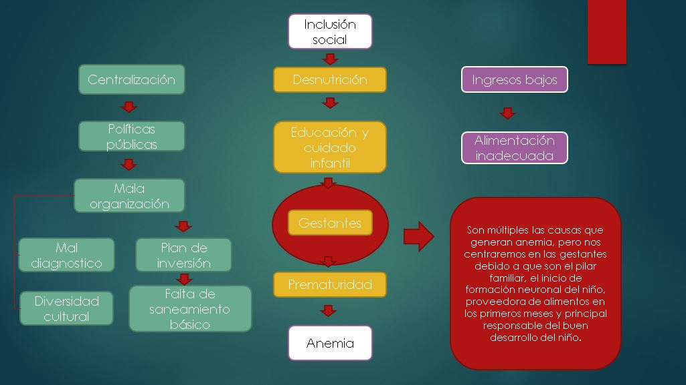

Como se puede analizar existen diferentes factores que producen anemia los cuales van desde falta de agua potable hasta desconfianza hacia los suplementos de hierro.
Todos ellos convergen en el bajo desarrollo cognitivo, el cual es nuestro efecto prioritario. Pero, las causas analizadas se enfocan en efectos producidos por la anemia luego del parto y no
durante la neurogénesis. Para ello se analizará el porcentaje de gestantes anemicas y si influye esta condición en la formación del cerebro.
Como se puede analizar, el procentaje de gestantes con anemia es elevado al igual que el porcentaje de gestantes adolecentes con anemia.
Por ende es necesario analizar si esta enfermedad afecta directamente al desarrollo del cerebro durante el proceso de embarazo.
El desarrollo cerebral normal depende de un período de gestación adecuado y de la disponibilidad de oxígeno, proteínas,
energía y micronutrientes, así como la estimulación sensorial y la actividad e interacción social luego del nacimiento del niño.
La privación de algunas de las condiciones antes mencionadas, o la exposición a tóxicos como el alcohol, el tabaco, infecciones prenatales
o alteraciones metabólicas, pueden ocasionar trastornos en el normal desarrollo del encéfalo. La extensión del daño depende mucho del momento
en que ocurre la agresión al sistema nervioso y el tiempo en que dicho proceso esté afectando al organismo en crecimiento y desarrollo (Garófalo, Gómez, Vargas y Novoa, 2009)
Además, la desnutrición materna durante el embarazo, medida a través del bajo peso materno para la talla y además por la poca ganancia de
peso durante el embarazo, han sido estrechamente vinculadas con pobres resultados al nacimiento. Los niños nacidos en estas condiciones suelen
presentar bajo peso al nacer, una circunferencia cefálica pequeña y menor peso cerebral, comparado con los niños nacidos a término sanos.
Estos niños suelen tener retardos cognitivos posteriores. La lactancia materna exclusiva desempeña una función vital en todos los niños,
más en estos niños con problemas nutricionales prenatales, quienes suelen beneficiarse mucho de la lactancia materna y pueden en gran medida
recuperar las funciones normales cerebrales. Importantes nutrientes, como los ácidos grasos, se encuentran solo en la leche materna, y desempeñan
un papel clave en la recuperación y desarrollo cerebral normal.
Investigaciones realizadas en niños prematuros, han demostrado que aquellos que recibieron lactancia materna exclusiva, presentaron índices
de coeficiente de inteligencia ocho puntos superiores a aquellos prematuros alimentados con fórmulas infantiles. Los niños que sufren grave desnutrición
proteica energética (DPE) pueden presentar disminución del crecimiento cerebral y de la producción de neurotransmisores. Además, se afecta el proceso
de mielinización nerviosa, lo cual provoca una disminución de la velocidad de conducción nerviosa. Las células más afectadas son las neuronas y las células
productoras de mielina. Se puede producir degeneración axonal además de la desmielinización.
La neurogénesis alcanza su pico en las 14 semanas de gestación y a las 25 semanas prácticamente ha completado su proceso, cuando está presente
el número total de neuronas adultas. Descubrimientos recientes en mamíferos apuntan a que existe un período limitado de vulnerabilidad a la malnutrición.
Durante dicho período el daño cerebral inducido por la malnutrición puede tener un efecto limitante del potencial de neurodesarrollo.
Los siguientes nutrientes son requeridos en este proceso:
Grasas y ácidos grasos escenciales, de no ser aportados generan decifit de atención por hiperactividad.
Ácido fólico, vitaminas B6, B12 y E, de no ser aportados generan cierre del tubo neural y síndrome de Down.
Hierro, no ser aportados generan retardo del neurodesarrollo, deficiencias inmunológicas, disminución de la fuerza muscular y de la capacidad para la realización de tareas motrices
Yodo, no ser aportados generan retraso mental y daño cerebral.
Acotación

En resumen: El desarrollo psicomotor y cognitivo del infante de 6 a 36 meses depende de cómo sus neuronas se han desarrollado en los primeros meses de embarazo de la mujer
( hasta las 25 semanas dónde prácticamente ha completado su proceso y tiene el número total de neuronas adultas), ya que en estos meses la neurogénesis alcanza su pico máximo y el fin de su proceso.
Por tanto, si la madre gestante no ha tenido una dieta adecuada desde el inicio de su embarazo, el proceso de la neurogénesis del niño se verá afectada, y por este motivo, consideramos que el estado nutricional antes y durante el embarazo es nuestro problema principal del
bajo desarrollo psicomotor y cognitivo de los niños.